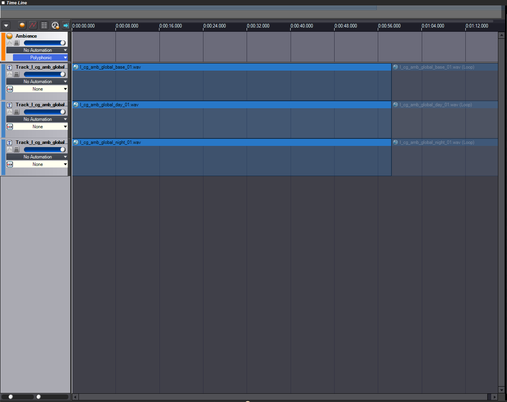
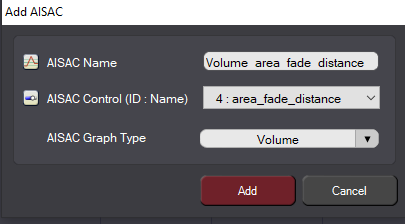
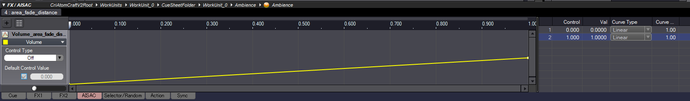

Обзор
Ниже объясняется, как настроить окружающие звуки в CRYENGINE с помощью ADX2.
Настройка окружающих звуков в ADX2 и CRYENGINE
Настройка окружающих звуков в ADX2
В CRYENGINE объекты Audio Area и Audio Area Ambience можно использовать для настройки окружающих звуков на уровне. Эти объекты необходимо прикрепить к форме области, которая определяет область, в которой воспроизводится звук. Поскольку объекты Audio Area и Audio Area Ambience не используют стандартное затухание ADX2, их настройка в Atom Craft отличается от настройки Audio Trigger Spot.
Настройка базового объекта окружающего звука
Сначала импортируйте .wav файл, содержащий ваши окружающие звуки, в дерево материалов Atom Craft. Выбрав этот файл аудиоматериала в Дереве материалов, установите Информация о цикле отмены. Флаг собственность Правда чтобы убедиться, что он зацикливается.
Создайте новый Cue и перетащите файл аудиоматериала на новую дорожку Cue.

Кью-треки
Затем создайте новый элемент управления AISAC, щелкнув правой кнопкой мыши AISAC-Управление папку в дереве проекта и выбрав Новый объект → Создать элемент управления AISAC опция из контекстного меню; назови это area_fade_distance. Этот параметр позже будет уменьшать громкость окружения по мере того, как слушатель удаляется от формы, с которой связан объект Audio Area Ambience/Audio Area.
Вернитесь к Cuesheet и щелкните правой кнопкой мыши Cue, который вы создали ранее для атмосферы. Выберите Новый объект → Создать AISAC... вариант. Это открывает Добавить AISAC окно, в котором можно указать детали нового AISAC, как показано на изображении ниже.

Добавить Айзак
Обязательно установите AISAC Управление поле для area_fade_distance, и AISAC Тип графика чтобы Объем. Нажмите кнопку Добавить кнопку, когда закончите.
Поскольку звук окружения не должен быть слышен, когда значение элемента управления AISAC равно 0, создайте график для AISAC в окне AISAC, аналогичный показанному на рисунке ниже. Окно AISAC можно открыть, нажав кнопку AISAC кнопку в нижней части главного окна Atom Craft.

AISAC график
Добавьте вновь созданный AISAC Управление в ACE, чтобы его значение впоследствии могло быть изменено объектами в CRYENGINE. Теперь вы можете создавать двоичные файлы CueSheet, содержащие Ambence Cue.
Для получения дополнительной информации о настройке и использовании созданного вами ADX2 ambience Cue внутри CRYENGINE, пожалуйста, обратитесь к Аудио и атмосфера документация.